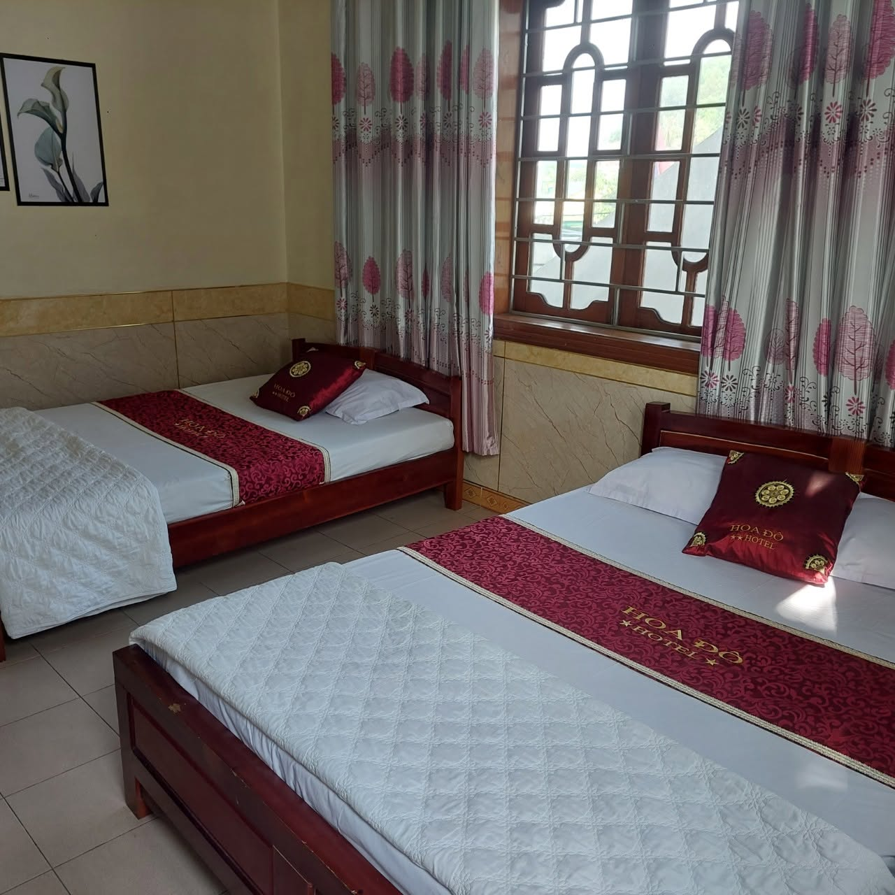

Nếu bạn muốn tìm một bãi biển còn giữ nguyên nét hoang sơ, yên bình, chưa bị thương mại hóa quá nhiều, Biển Xuân Thành chính là lựa chọn tuyệt vời. Chỉ cách Khách Sạn Hoa Đô khoảng 10km, đây là điểm đến lý tưởng cho một ngày nghỉ dưỡng, tắm biển và thưởng thức hải sản tươi ngon.
Bãi cát trắng mịn, làn nước trong xanh
Biển Xuân Thành sở hữu bờ cát trắng mịn trải dài, làn nước trong xanh và độ dốc thoải rất an toàn cho việc tắm biển, kể cả với trẻ nhỏ. Không khí trong lành, ít gió bụi công nghiệp cùng khung cảnh rừng phi lao xanh mát chạy dọc bờ biển tạo nên một không gian nghỉ dưỡng thư thái, tách biệt khỏi sự ồn ào, đông đúc của những bãi biển du lịch lớn.
Thiên đường hải sản tươi sống
Đến Xuân Thành, du khách không thể bỏ lỡ cơ hội thưởng thức hải sản tươi sống được đánh bắt ngay trong ngày bởi ngư dân địa phương. Từ tôm, cua, ghẹ, mực đến các loại cá biển đặc sản, tất cả đều được chế biến đơn giản mà vẫn giữ trọn vị ngọt tự nhiên, với mức giá rất phải chăng so với các khu du lịch biển nổi tiếng khác.
Điểm đến cho gia đình và nhóm bạn
Với không gian rộng rãi, thoáng đãng, Xuân Thành phù hợp cho các hoạt động dã ngoại, cắm trại, đốt lửa trại vào buổi tối cùng gia đình và bạn bè. Đây cũng là nơi lý tưởng để đón bình minh hoặc ngắm hoàng hôn trên biển — những khoảnh khắc yên bình khó quên trong hành trình khám phá Hà Tĩnh.

Kinh nghiệm tham quan
- ☀️ Mùa hè (tháng 4 - tháng 8) là thời điểm lý tưởng nhất để tắm biển.
- 🦐 Nên hỏi giá hải sản trước khi gọi món tại các quán ven biển.
- 🏕️ Có thể kết hợp cắm trại qua đêm nếu đi theo nhóm đông người.
- 🚗 Đường ven biển đẹp, thuận tiện di chuyển bằng xe máy hoặc ô tô.
Nghỉ ngơi thuận tiện tại Khách Sạn Hoa Đô
Sau một ngày tắm biển Xuân Thành, hãy trở về Khách Sạn Hoa Đô để nghỉ ngơi trong không gian sạch sẽ, thoáng mát với mức giá bình dân. Chúng tôi luôn sẵn sàng tư vấn lịch trình khám phá biển Xuân Thành cho quý khách.
Liên Hệ Đặt Phòng Ngay